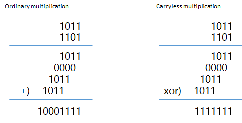

Carryless multiplication is a special operation used in some cipher algorithms.

In the Intel sample, this instruction is used only for the calculation of the first 255-bit product, and subsequent multiplications with constant R are done by combinations of bit shifts and XORs. But using this instruction more extensively can accelerate the execution (at least on my environment: Visiaul Studio 2017 + i7-7700).
///////////////////////////////////////////////// // Dot operation for GCM/GMAC // NOTE: x, y and return value are LITTLE ENDIAN // defining this constant within the function slows down the execution incredibly // in MS Visual Studio Envrironment. static const __m128i R = _mm_set_epi64x(0xE100000000000000, 0); __m128i GCM_Mul_LE(__m128i x, __m128i y) { // CLMUL x and y to produce the 255-bit product z:zL __m128i zL = _mm_clmulepi64_si128(x, y, 0x00); __m128i zM = _mm_clmulepi64_si128(x, y, 0x01); __m128i zM2 = _mm_clmulepi64_si128(x, y, 0x10); __m128i z = _mm_clmulepi64_si128(x, y, 0x11); zM = _mm_xor_si128(zM, zM2); zL = _mm_xor_si128(zL, _mm_slli_si128(zM, 8)); z = _mm_xor_si128(z, _mm_srli_si128(zM, 8)); // z:zL 256-bit data // bit 255: zero // bit 254-127: the upper 128-bit of the product // bit 126-0: overflow bits // Extract the overflow bits, aligned to the left. __m128i ov = _mm_slli_epi64(zL, 1); ov = _mm_or_si128(ov, _mm_slli_si128(_mm_srli_epi64(zL, 63), 8)); // CLMUL lower part of overflow bits and R. __m128i wM = _mm_clmulepi64_si128(ov, R, 0x10); __m128i wL = _mm_slli_si128(wM, 8); // wL 128-bit data // bit 127: the LSB of the upper 128-bit of R * the overflow bits // bit 126-121: the overflow-again bits // bit 120-0: zero // Extract the overflow-again bits, aligned to the left. __m128i w2 = _mm_slli_epi64(wL, 1); ov = _mm_xor_si128(ov, w2); // CLMUL (the overflow bits ^ the overflow-again bits) and R. __m128i w = _mm_clmulepi64_si128(ov, R, 0x11); // wM and wL is not affected by the XORing of the overflow-again bits // so we can use the values calculated before. w = _mm_xor_si128(w, _mm_srli_si128(wM, 8)); // w:wL 256-bit data // bit 255: zero // bit 254-127: the result of R * (the overflow bits ^ the overflow-again bits) // bit 126-0: garbage // xor to make the final result. z = _mm_xor_si128(z, w); zL = _mm_xor_si128(zL, wL); // z:zL 256-bit data // bit 255: zero // bit 254-127: The final result // bit 126-0: garbage // Extract the final result. __m128i hc = _mm_srli_epi64(z, 63); __m128i lc = _mm_srli_epi64(zL, 63); z = _mm_slli_epi64(z, 1); hc = _mm_unpackhi_epi64(lc, _mm_slli_si128(hc, 8)); z = _mm_or_si128(z, hc); return z; }